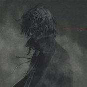

Forums galactiques > Taverne galactique : lieu de discussion informel > Salle de duel
| Gamila Réputation à la taverne : 20 21/08 ETU 19:34 | Score : 1 Détails Le Barabel était épuisé,mais il avait un dernier coup à jouer.
Comme prévu,N'Tyrr avait envoyé une attaque de type air pour contrer ses pétales et elle lancait une ultime attaque. Gamila ferma les yeux. Il ressentait tout ce qui était autour de lui. N'Tyrr,les pétales,les murs,la tornade mortelle,son propre souffle.Tout était vivant. "Vois l'âme et le véritable aspect de l'attaque du Barabel." Il serra ses mains l'une contre l'autre.Aussitôt,les fleurs de cerisiers prirent leur véritables apparence:celles d'une centaine d'épées.Elles brisèrent la tornade et foncèrent sur N'Tyrr alors que celle ci approchait à grande vitesse.Près.Toujours plus près.Trop près. | ||
| emerion Réputation à la taverne : 11  22/08 ETU 01:10  | Score : 0 Détails Emerion sut que leurs attaque étaient mortel pour l'un comme pour l'autre
Il sauta entre les deux et repoussa de sa main droite les lames de Gamila, et de sa main gauche le coup de N'tyr. - Vous voulez donc vous tuer, car l'un comme l'autre n'aurait survecus a ces attaque. Emerion tombas alors a genous, une multitude d'entaille apparessairent a sa droite et son bras gauche perdis toute consitance. -Je me suis sur-estimé. ET Emerion perdis conaissance. |
Forums galactiques > Taverne galactique : lieu de discussion informel > Salle de duel